tgauweiler / WasherRepair
Introduction
The old miele hydromatic W701 washer was acting up and not spinning its barrel.
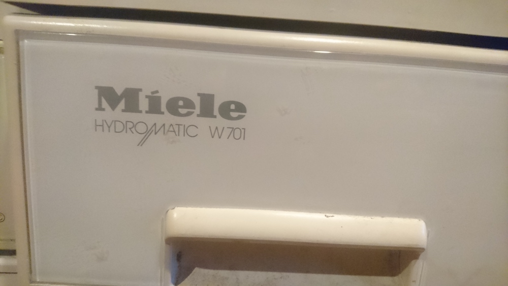
Opening & Repair
First i had to remove some screws to swing the front part open with a litte force.
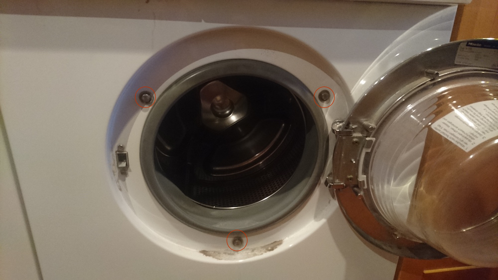 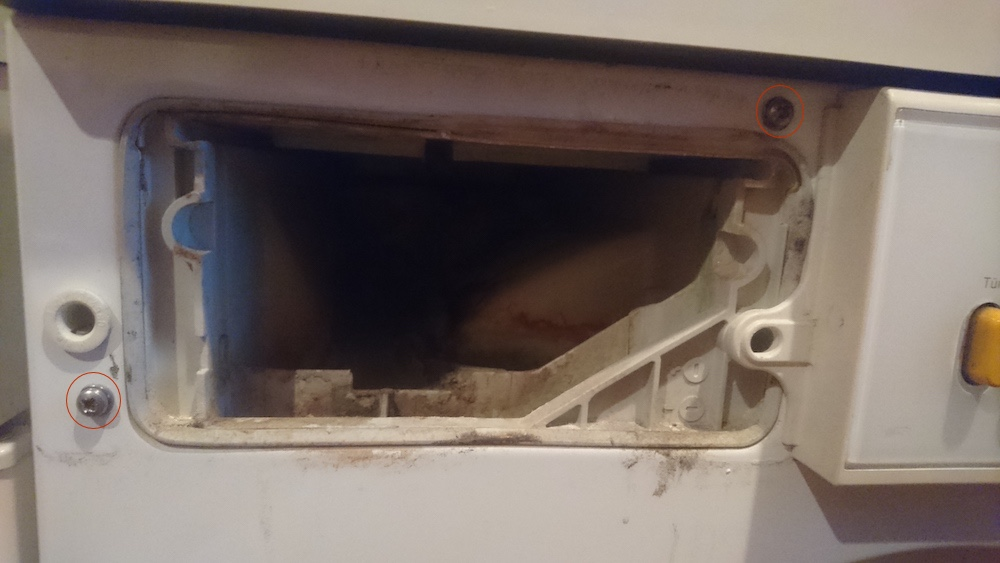
Next came the removing of all screws that hold the motor cables in place.
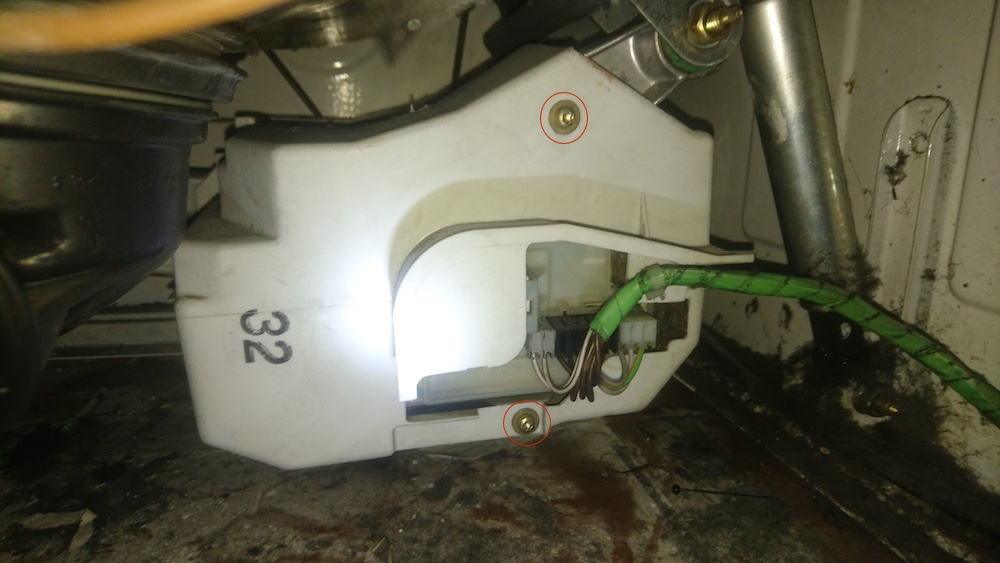
At this part i checked the resitance with my multimeter between the left and right coals. (Measured at the litte open flat pieces left and right) and got infite resistance. Which indicates that the coals no longer have a connection to the collector.
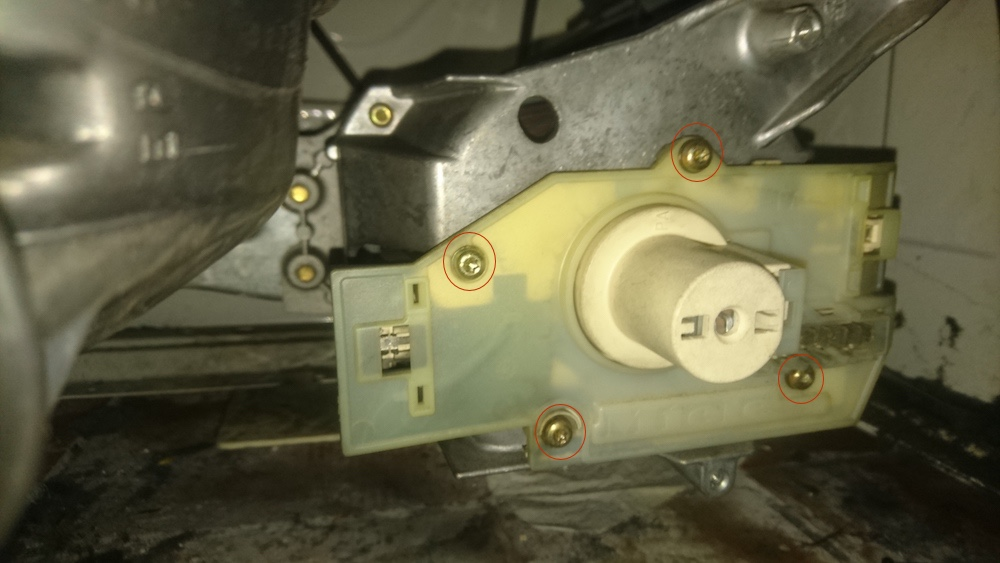
After some careful pulling i got the coals out and saw that the left one is pretty much gone.
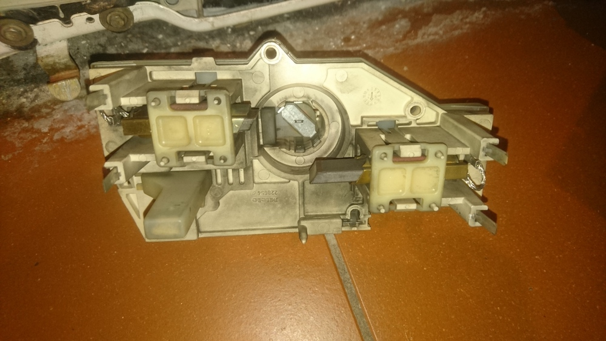
So i got some new cheap ones from ebay.
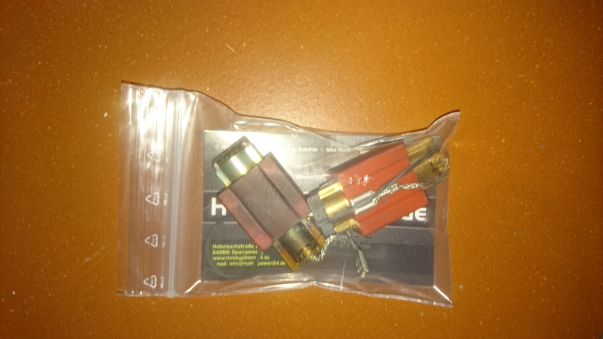
Installed the new ones and pushed them inside their cases until it locked. That put it back in and wigggled a litte a small screw driver at the coal cases to unlock the coals again.
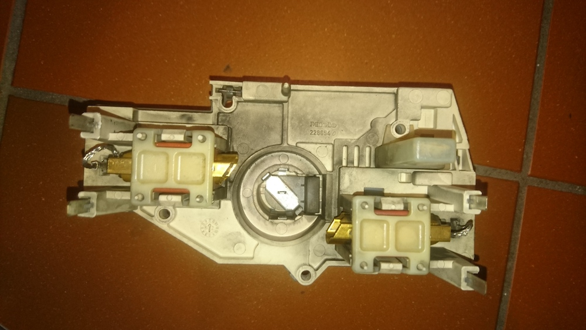
Had some problems to get a connection after that. The solution was a not prober connection to the spindle, which i found out after testing all connectors of the front plate. After some adjusting it worked again!
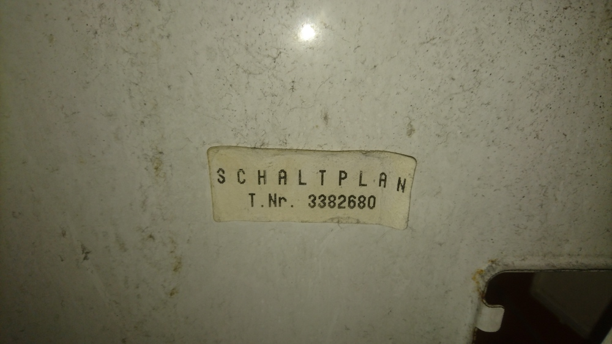 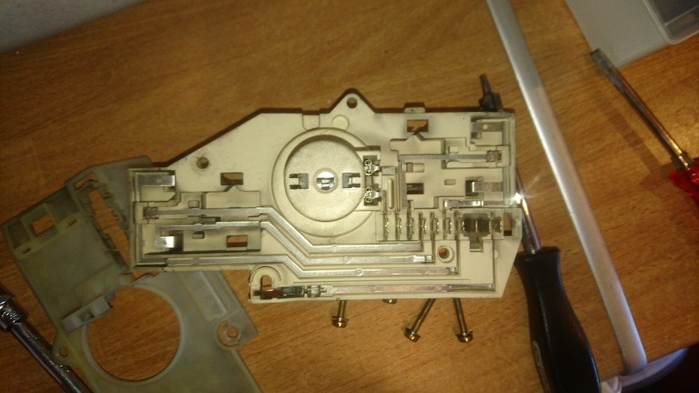 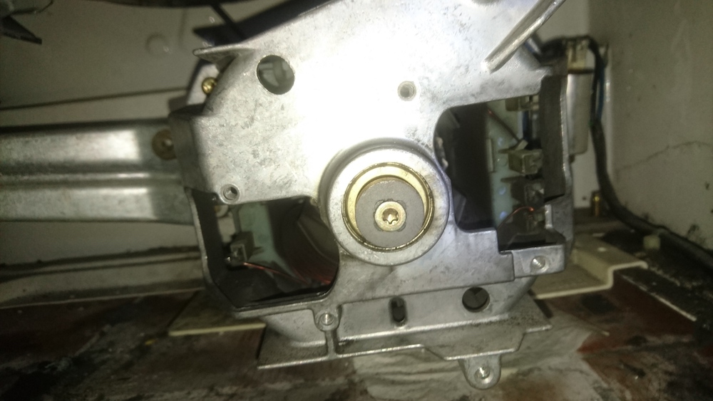 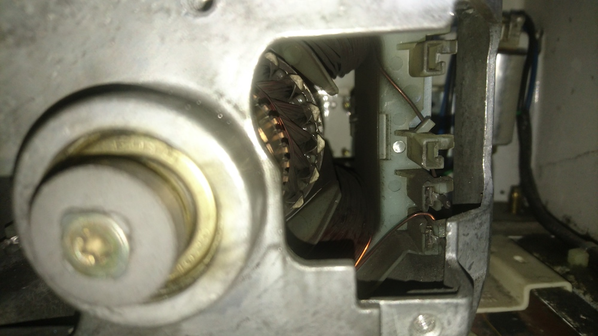 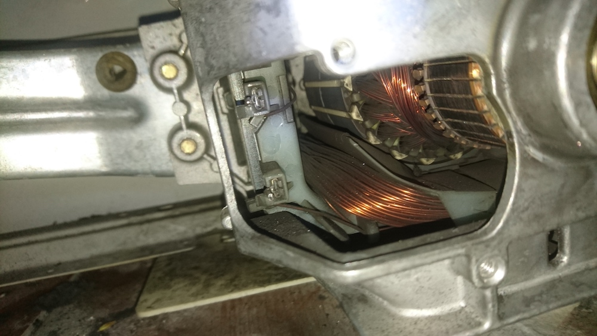
Conclusion
The coals did cost me around ~10€ + 1h of my time to open everything up and replace them. All in all worth it!